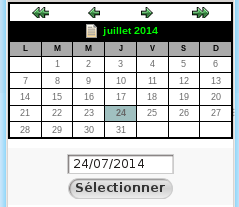

Prévision (Planning des réservations)
Afin d'activer la planification des réservations, vous devez intervenir sur des paramètres dans l'onglet Administration.
Pour en savoir plus, consultez le chapitre Administration.
Cette fonctionnalité permet d'anticiper le besoin d'un lecteur sur un document. Il pourra ainsi réserver par avance le document entre deux dates.
Le planning des réservations est utile, par exemple, pour des lecteurs qui souhaitent obtenir un ouvrage essentiel en période de révision d'examen.
Réservation à partir de l'interface de gestion⚓
Une fois le planning de réservation activé, un nouveau bouton apparaît en affichage de notice (à condition que le statut d'exemplaire autorise la réservation) :
Vous pourrez ajouter des prévisions sur les documents :
en résultat de recherche
en consultation de notice
Vous pourrez ajouter des prévisions sur les documents via ces deux interfaces.
Remarque
Vous pouvez désormais choisir d' :
ajouter une réservation si vous souhaitez que la réservation soit active directement,
ajouter une prévision pour anticiper un besoin sur un document
Cliquer sur le bouton
Ajouter une prévisionRechercher l'emprunteur
Sélectionner les dates de réservation (début et fin).
Une fenêtre pop-up s'ouvre dans laquelle vous pouvez saisir ou sélectionner une date.

Cliquer sur
Enregistrer.
Vous accédez à la fiche du lecteur. La réservation prévisionnelle est désormais inscrite dans le tableau des prévisions ce qui permet de les différencier des réservations classiques.
Vous pouvez également ajouter une réservation prévisionnelle à partir de la fiche du lecteur en cliquant Prévisions Ajouter.
Gestion des réservations prévisionnelles⚓
De la même manière que les réservations, les réservations prévisionnelles doivent être validées en gestion.
Remarque
Les réservations prévisionnelles ne sont pas affichées dans le tableau des Réservations en cours. Les deux entités sont totalement indépendantes.
Visualiser les réservations prévisionnelles⚓
Vous pouvez consulter la liste des réservations prévisionnelles dans l'item Prévisions.
Chaque réservation prévisionnelle est affichée sur une ligne. Vous retrouvez notamment :
le titre du document réservé,
le nom du lecteur ayant effectué la réservation prévisionnelle,
la localisation du lecteur,
la date à laquelle le lecteur a effectué la réservation prévisionnelle,
l'intervalle durant lequel le lecteur souhaite que le document soit mis de côté,
l'état de la réservation (validée, confirmée, ...).
Modifier une date de début ou une date de fin de réservation⚓
Avant la validation d'une réservation, en fonction de la disponibilité d'un document, vous pouvez avoir besoin de modifier les dates de début et de fin de réservation d'un document. Il vous suffit de cliquer sur le bouton date et d'effectuer la modification.
Une fenêtre pop-up s'ouvre. Vous pouvez dès lors saisir ou sélectionner une nouvelle date.
Traiter les réservations prévisionnelles⚓
Afin de traiter ces réservations, vous devez sortir les documents correspondant des rayons (pour les mettre de côté).
Quelques jours avant l'intervalle de réservation vous pouvez vérifier la présence du document dans vos rayons.
Si le document est disponible au sein de vos rayons :
Valider: Allez chercher le document dans les rayons et mettez le de côté pour le lecteur.Afin de valider cette action, sélectionner la ligne correspondante et cliquez sur le bouton
Valider. Pour vous informer que la réservation a bien été prise en compte, une croix apparaît dans la colonneValidée.Lettre de confirmation: afin d'informer le lecteur qu'il peut venir chercher le document, vous pouvez éditer un courrier. Pour vous informer que la réservation a bien été prise en compte, une croix apparaît dans la colonneConfirmer.
Truc & astuce
Vous pouvez directement vérifier la disponibilité des documents en cliquant sur le titre du document sur le tableau. Vous accéderez ainsi au mode de visualisation des notices et des exemplaires.
Invalider des demandes de réservations prévisionnelles⚓
Si vous ne pouvez pas répondre à une demande de réservation prévisionnelle, vous pouvez refuser la demande en cliquant sur le bouton Invalider, après avoir sélectionné la ligne correspondante.
Supprimer une réservation prévisionnelle⚓
Si vous souhaitez supprimer une réservation, sélectionnez-la en cochant la case (colonne Sélection) puis cliquez sur le bouton
Supprimer la sélection.
Vous pouvez également supprimer une réservation depuis la fiche du lecteur.
Éditer les courriers de confirmation des réservations prévisionnelles⚓
Pour imprimer les lettres de confirmation des
réservations prises en compte, cliquez sur le bouton
Lettres de confirmation.
Attention
PMB ne vous propose pas de message d'alerte pour vous prévenir des alertes prévisionnelles. Vous devez donc consulter régulièrement le menu Circulation > Réservations > Prévisions.
Filtrer la liste des prévisions⚓
Par défaut, PMB affiche la liste de toutes les réservations prévisionnelles effectuées.
Il est toutefois possible de restreindre les résultats obtenus par l'intermédiaire des filtres situés au dessus de la liste :
Réservations validées: réservations traitées (exemplaires ayant été mis de côté pour satisfaire la demande du lecteur).Réservations en suspens: réservations en attente (exemplaires dont la réservation doit être traitée).Validées non confirmées: exemplaires dont les réservations ont été validées mais pas confirmées.
Si PMB comporte plusieurs localisations, vous pouvez utiliser le menu déroulant permettant d'afficher les réservations d'une seule localisation.
Le planning des réservation à l'OPAC⚓
Vous pouvez également proposer aux lecteurs d'utiliser le planning des réservations via l'OPAC.
Pour activer ce paramètre, il faut intervenir sur le paramétrage dans l'onglet Administration.
Pour en savoir plus, voir les fonctionnalités lecteur à l'OPAC.